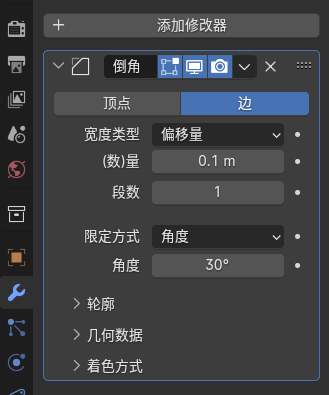
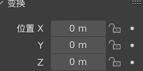
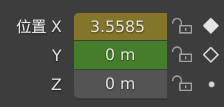
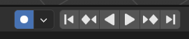
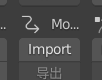
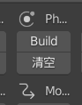
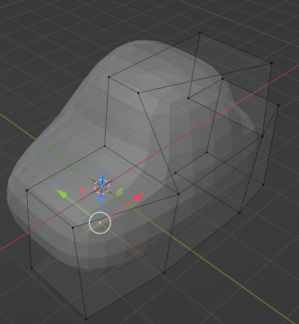
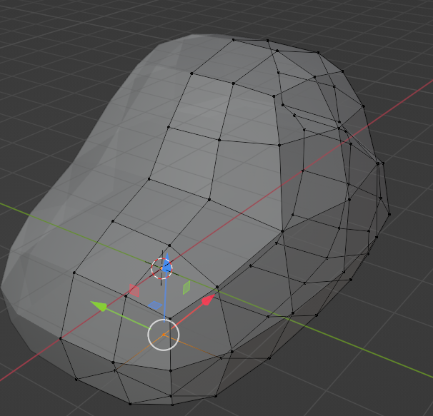

1. 概论
Blender 是一款免费开源的 3D 建模软件，其小巧的体积能够支持整个3D创作流程：建模、雕刻、骨骼装配、动画、实时渲染、运动跟踪，甚至可用作视频编辑和游戏创作的全功能工具。目前由Blender基金会进行管理和开发
VFX：视觉特效
零、相关成果
若视频无法播放，则当前 md 渲染器不支持 Markdown 扩展语法，不支持视频
硬表面建模
三只小猪

金币基站
.png)
基本动画
雕刻系统：荧光树桩

粒子系统：狂奔小车
刚体系统：子弹冲击
几何节点：猴头构建
骨骼系统：走路机器人
一、默认界面

最顶端：工作区切换
上侧：主要模式设置等
左侧是物体常用工具，例如移动、游标、旋转，类似于PS
右上侧：大纲
右下侧：属性管理器（细节管理器），用于显示被选定的模型的属性
中央：3D展示区，也是我们主要的编辑区
中央下侧：动画区，类似于PR轨道，可以拖动边界隐藏或展示该界面（若有需要的时候）
细节面板中，从上往下又细分为许多具体的属性，例如：工具、渲染属性、输出属性、视图层属性、场景属性、世界属性、集合属性、物体属性、修改器属性、粒子属性、物理属性、物体约束属性、物体数据属性、材质属性、纹理属性、灯光属性等。在选中特定类的时候可能有专属的属性出现，比如灯光具有灯光属性（非灯光无该属性），而没有粒子属性
二、基本操作
注意需要英文输入法，使用blender左手基本必放在shift和ctrl上
blender里Y轴是前轴X轴是侧轴，注意区分
中键：旋转视角
左键：选中或批量框选物体
右键：物体上下文菜单
滚轮：放大缩小
a：全选（注意不是ctrl+a）
m：新建集合（组）
n：打开工具和插件窗口
i：在平面内新建一个内插面，或者记录一个关键帧
e：挤出
i 和 e 配合，可做平面内凹效果。
h：隐藏选中的物体
alt+h：显示被隐藏的物体
编辑模式下按 f：填充线段或圆环围成的面
ctrl+p：选中一些物体后，设置父子关系，父要最后一个选
开始线段+ctrl+结束线段：选择开始与结束的线段之间的线
shift是多选，ctrl是连选，和Windows的操作刚好相反
shift+中键：视角平移（必须先按下shift）
shift+s：转移游标的位置，最常用的就是游标到选中项
shift+a：快速添加物体
shift+r：重复上一步操作，在制作大规模的重复物体时非常有效，也是阵列修改器的一个替代操作
ctrl+j：合并多个物体，使其成为一个整体
shift+右键：点击，将游标移动到此处
alt+选择边：选择循环边
alt+d：关联复制：复制后只需要改动一个，其余复制体均会同步变化
x：删除（弹出确认框）
delete：删除（直接删除没有确认框）
ctrl+a：应用修改。比如立方体先进行了拉伸，再应用其他功能可能就会出现拉伸后的效果，这时就需要应用修改，这个时候这个立方体就等价于一个原长方体了
SHIFT+d：复制并移动
ctrl+c：复制到剪切板（用的不多）
ctrl+i：编辑模式下的反向选择
tab：切换模式，注意只能切换最近的两种模式
选中几个点或线或面后，按m：按条件合并（选择物体就是打组了）
shift+选择：批量选择物体
按住~：打开视图雷达，视图切换。Blender为单视图，没有多窗口的视图。要切换回来就按中键。同时还有查看所选的功能，也就是虚幻里的聚焦
/：对选中的物体进行隔离（单独）处理
选中某物体后：（会根据鼠标的位置调整参数）
W：选择，重复按可切换具体的工具
S：缩放
G：移动
R：旋转。双击R自由旋转
T：变换（移动旋转缩放的合集）
以上按键，再次按下x、y或z，就会锁定某一个轴进行变换，如果想要更精确，选定该轴后还可以输入数字确定。
如果使用以上快捷键，则会直接跟着鼠标进行变换，只有在鼠标点击左侧的工具时才会出现三维轴的变换
游标：只有选中游标工具时，才能移动游标，游标的作业是当添加新物体时，游标在哪物体就加在哪
三、基础知识
摄像机
视角问题：进入摄像机视角，其右上方有个很小的箭头，展开（或直接按n），然后在视图-勾选：锁定摄像机到视图，即可自由移动摄像机视角，不用繁琐的去移动了。但这样的话就不能直接按中键退出摄像机视角了（可以做完了再关）
渲染器
渲染器是计算机图形学中用于生成图像、动画或视频的软件组件，它将三维模型、场景数据、材质、灯光等信息转换为二维图像或连续的图像序列
选择渲染器前先保存工程文件！否则渲染的那一刻，负载过高可能直接闪退
可以改成GPU计算，如果没有，需要在偏好设置-系统手动打开CUDA
渲染器的视角是根据场景中所防止的摄像机来决定的。前期工作完成后，点击顶部的渲染-渲染图像，即可得到成品
Blender 自带两种渲染器，大致特点为：
Eevee：渲染速度快，但真实度不够，需要手动调整很多参数，经过调整可实现三渲二等特殊效果
Cycle：更真实，但吃性能，速度慢
Eevee 渲染器
基于 OpenGL 的实时渲染引擎。主要通过屏幕空间技术来近似模拟光线效果。屏幕空间反射（Screen Space Reflection，SSR）技术是用于模拟反射的一种方法，它在屏幕空间内计算物体表面的反射效果，根据物体在屏幕上的位置和视角等信息，来估算反射光线的方向和强度
该渲染器提供了丰富的后期选项，能够增强画面的艺术效果，并且渲染速度快。不过在物理真实感方面不如Cycles，且无法精确表现出复杂的光纤交互现象（如多次反射、折射等）
Cycles 渲染器
基于光线追踪的渲染器，采用基于物理的渲染技术，模拟光线在场景中的传播过程，能够准确地模拟真实世界中的光照效果
可以实现高质量的渲染效果，但渲染速度相对较慢。可借助GPU加速渲染
物体的交互模式
物体模式（对象模式）
最常见的模式，可选中整个模型，并进行模型放置、对模型进行基本变换等常见操作
编辑模式
该模式主要用于对模型的几何形状进行编辑。可以选择对象的顶点、边或面来操作
先选中要编辑的物体然后进入编辑模式编辑
快捷键Tab编辑模式和物体模式相互切换；编辑模式下快捷键1、2、3分别对应选择点、线、面
雕刻模式
雕刻模式提供了一套类似于传统雕刻的工具，可以使用笔刷（Brush）在模型表面进行雕刻
缩放有问题的话，对后面的雕刻也会产生影响，所以必须先应用缩放
雕刻本质就是对布线进行细微调整，所以物体细分强度直接决定了雕刻的细节。细分级数越大，布线越密集，雕刻越精细（或者说光滑）
雕刻模式常用工具：
光滑：作用是将物体表面的不平整变得光滑，按住shift即可使用
自由线：推拉和挤出
黏条：表面膨胀出条状结构
膨胀：表面膨胀起来
球体：表面长痘痘
抓起：抓起一块，像小尖刺
弹性变形：适合整体塑性
蛇形钩：可变角度的“抓起”，可做恶魔弯曲的角等
平化：削铁如泥
注意点：
在顶部有“笔画”-笔画防抖，鼠标操作如果抖动建议打开“笔画防抖”
所有工具按ctrl都是产生的反方向效果
如果工具使用多了，物体可能产生一些布线交叉，这时可使用重构工具：顶部右边--重构网格，修复效果
笔画的大小，可以调整，当然也可以调整和物体的距离，来达到变笔画大小的效果，即笔画大小和距离是有联系的
常用修改器
修改器允许以非破坏性的方式对三维模型进行各种修改和变形，而不会直接改变模型的原始数据。建议在细节面板的”修改器“属性中使用修改器

常见修改器
Blender 4.0中一共四种修改器类型：编辑类、生成类、形变类、物理类
阵列：当需要大量重复元素，如一列立方体，可使用。系数表示两个之间的距离（1表示严丝合缝），数量为生成数量
倒角：让尖锐的多面体边缘变得更加平滑
镜像：可以选择关于x、y或z轴镜像，也可指定某个物体作为镜像，产生镜像。如果后期出现了一些小问题，可能需要先将镜像应用
线框：将某个物体的所有线提取出来，并赋予厚度
表面细分：应用了细分之后物体会有更多的布线，可以进行更加精细的建模。快捷键ctrl+1/2/3（只在物体模式下生效），分别对应三个级别的细分
缩裹：把某个平面图案贴到某个有褶皱的图形上时就可以用缩裹修改器
建形：基于内置的算法，在将形状随时间逐步构建出来，一般用在动画里
修改器的堆叠顺序
修改器可以按照一定的顺序堆叠在模型上，每个修改器都会在前一个修改器的基础上对模型进行进一步的修改，不同顺序添加的相同修改器，得到的结果不一定相同
曲面细分往往放在最下面
应用与取消修改器
当对模型的修改效果满意后，可以应用修改器。应用修改器后，修改器对模型的修改就会永久地改变模型的原始数据，且该修改器会从修改器列表中消失
如果对修改器的效果不满意，或者想要重新调整修改器的参数，可以取消修改器。取消修改器后，模型会恢复到添加该修改器之前的状态。在修改器列表中，点击修改器旁边的“X”按钮即可取消该修改器
2. 应用领域
一、动画
基本
动画编辑区主要是一个时间轴窗口，该窗口以“帧”为单位，位于主视口下方
动画的本质：记录不同时间点的 Actor 属性的变换。动画离不开时间、变量、属性，缺一不可。制作动画和PR制作关键帧动画高度相似

如上图所示，细节面板大部分属性参数的后面都有一个小圆点，其功能是在当前时间点打上这个属性的关键帧

当时间标处在的这一帧有某个属性的关键帧，则参数会变成黄色，圆点变成菱形；当这个参数有关键帧但时间标所处的这一帧没有，则显示绿色；当这个参数没有关键帧时保持灰色
如果出现橙色，则表示：这一帧没有打关键帧但是产生了意外的属性改变，如果不打上关键则该改动无效
如果想要改动参数时自动插帧，可打开自动插帧选项（下图第一个按钮）：

注意第一个关键帧必须手动打。后面的按钮的功能为：跳转到第一（最后）帧、跳转到上（下）一个关键帧、往前反向播放、往后播放等
动画必须先改参数再打关键帧，否则无效
首先在”右上方-选项-仅影响原点“处，把所有需要的动画物体的原点确定好，之后就可以进行关联动画，更加高效
粒子系统
位置为”属性管理器-粒子属性“，按”+“可新建一个粒子对象
拥有粒子系统的物体物体（称之为发射器）将展示粒子，粒子在这个物体上发出
有两种效果：
发射体：是一个动画效果，不断散发出新的粒子。发射的粒子也称发射体。默认粒子都是有重力的，想要其他方向，则取力场权重改。重力（和其他力）可以为负，但必须手动改
毛发：静态效果，用于制作树林等大规模物体。需要指定渲染物体：粒子系统-渲染-渲染为。注意默认发射的时候以物体的轴心为基点
导入PMX文件
不要使用太高的blender版本，最好是2.93及以下，否则可能报错
使用一个叫CATS的插件，开启后在视窗和场景大纲、细节面板之间会出现cats和mmd工具的标志
步骤
使用mmd工具，导入模型。可以选择缩放为0.1。注意不要用cats的那个导入
选中模型或骨架，在cats上方的mmd工具中--Morph tools中找到顶点，点击+-下面的向下箭头，选择绑定，绑定骨骼
导入动作：选中同时选中骨架和模型，在mmd的工具栏中找到导入动作的按键，如下图所示。注意：导入的动作，缩放必须和选中的模型的缩放一致；若面部表情没有导入，则试试选中材质然后再次导入

打开材质预览（右上角材质的第三个小球），可查看材质情况，若出现奇怪的粉色表示材质缺失
若材质缺失，则在mmd工具中的操作项，选择Convert materials for Cycles，并在视图左下角弹出的框中选择转变成BSDF的选项。注意：若不进行这一步，导入到虚幻引擎等其他软件时，可能会出现白模，即模型的材质没有被正确导入
点击Convert materials for Cycles下方的按钮，按材质分离模型
选中骨架，在MMD工具中，在导入动作的按钮正上方，有一个建形的按钮，点击build。注意！：建形只能在动作开始的第一帧处建形

按材质分离后，可以对每个小部件比如头饰等进行单独调整，按tab进入编辑模式
如果调好了就可以导出FBX了，可选择是否导出动画：导出动画会极大加长渲染时间
注意点
因为导入的模型本身就有很多隐藏的选项，所以千万不要用H和ALT+H隐藏和显示物体，只能去世界大纲里找，然后单独关闭。否则用ALT+H，所有隐藏物体都会出来，会使建形等工作出现问题，只能重新来过
动画时若刚体物体（比如场景中的物体）和人物模型有重叠，可能会导致模型出错，此时删掉这些物体就行了
若直接拖动时间线会出问题，或者打开时模型是乱的，可能是还没有缓存动画，导致模型不动，可以手动烘焙，或者让他从0帧开始播放
导出模型、加载模型时耗时都比较长，对于一个复杂的人物模型而言，前者约为4分钟，后者约为1分钟。虽然会提示无响应，但确实在运行。该问题同样适用于虚幻引擎导入携带有动画的复杂模型fbx文件，时间会非常长。若想只导出一部分，比如导出100-200帧的动画，可以把时间轴的入点和出点改变（只是计算可能仍需要计算0-100帧），毕竟后面的物理要以前面的为基础，和想要得到100帧的画面必须从0帧开始计算是一样的道理
二、物理效果
位置：属性管理器--物理
物理属性能够建立与现实世界相似的物体特性，如力场、碰撞等，这些物理属性都是为动画服务的。如果只是建模，直接添加材质就好了，不需要物理属性，也正是这个原因，添加刚体等属性后，需要注意时间轴
刚体
刚体是在运动中受力作用后，形状和大小都不变，而且内部各点的相对位置保持不变的物体
绝对刚体是不存在的，只是一种理想模型，但如果物体变形程度相比物体本身尺寸来说极其微小则可视为刚体
添加刚体属性后，物体会有一些诸如重力、碰撞等属性，且默认是活动项，对于某些静止的刚体，需要将其改成被动
被动：有碰撞检测的普通物体，它是完全不动的，比如地面
活动项：不仅有碰撞检测，本身也会随着受力而运动。例如，需要做成被撞后倒塌的效果，则这个刚体必须是活动项
刚体物体之间尽量不要有交叉，否则容易出现问题，比如弹起来
平面也可以是刚体，但是平面没有质量、体积等属性
复制刚体属性，即批量应用刚体属性，可在物体--刚体--从活动项复制
刚体的一些重要参数
碰撞-形状：碰撞检测时候的外壳，越精细碰撞效果越好，但性能开销越大。如果碰撞表面存在凹陷的话，则需要将形状改成网格
设置-播放动画：不勾选该选项，物体同时具有动画和物理属性（如重力），勾选该选项，物体则会失去重力等属性，只有动画
技巧：播放动画也是有关键帧的，可以在开始的时候播放动画，避免重力影响，有这样一个初速度之后，再取消播放动画，物体就以这个速度，以完全符合物理规律的状态运动下去
属性管理器-场景属性-刚体世界环境-速率：表示模拟的世界的速率，降低则等价于延缓时间。可制作类似慢镜头的效果
三、骨骼
骨骼（Bone）是一种用于创建角色动画和控制模型变形的重要工具
骨骼是构成骨架的基本单元，它像现实世界中生物的骨骼一样，能够通过关节连接在一起，形成一个完整的骨架结构。在Blender中，骨骼可以被看作是一条有方向的线段，具有头部和尾部两个端点，头部是骨骼的起始点，尾部是骨骼的终点
在创建骨骼动画之前，要有骨架的整体控制关系（即父子关系）的认识
骨骼的属性
头部和尾部：骨骼的头部和尾部位置决定了骨骼的长度和方向。在编辑模式下，可以通过移动骨骼的头部或尾部来改变骨骼的形状和位置。Blender中，大的一端是头部，小的一端是尾部。所有连接到骨骼尾部的都属于它的子骨骼
连接关系：骨骼之间可以通过父子关系进行连接。子骨骼会继承父骨骼的变换，这样可以形成一个层级化的骨架结构
权重（Weight）：权重是骨骼与模型网格之间连接强度的度量。在骨骼绑定模型时，每个顶点都会被赋予一个或多个骨骼的权重值，权重值的范围通常在0到1之间。权重值越大，该骨骼对该顶点的控制力就越强。例如，对于手臂骨骼附近的网格顶点，手臂骨骼的权重值可能较高，这样在手臂骨骼移动时，这些顶点会跟随骨骼产生较大的变形
骨骼的右下角属性管理器，会有三个新的属性
骨骼组：最常用的是视图显示，可调整为“在前面”和骨骼显示形状
单段骨骼
骨骼约束：姿态模式下特有
骨骼的使用
基本操作
删除骨骼有两个选项：
直接删除某一段骨骼，注意就算骨骼删完了整个骨架还在
融并骨骼。若融并骨骼，则只保留根点和终点
骨骼有姿态模式，可以较为容易地编辑骨骼姿态（调整骨骼），制作动画时主要在姿态模式下进行并打上关键帧，而编辑模式主要是创建身体的骨骼（做骨骼）
选中两个骨骼，”ctrl+p-保持偏移量“可绑定父子关系；”ctrl+p-相连项“是让骨骼首尾相连
shift+d以复制骨骼，但注意复制的骨骼和被复制的骨骼同为上一个骨骼的子骨骼，即两者是兄弟关系
alt+P删除父级，ctrl+p创建父级
骨架可以对称复制，编辑模式-右侧”骨架-对称“。但是注意，在对称复制之前，骨架的名字一定要规范，如xx_L或者_R都可以
骨骼轴向时常出错，需要注意
在创建骨骼的时候，比如腿部骨骼，则大腿和小腿之间的骨骼不能完全是一条直线，必须往前略有弯曲，让blender明白这里是向前弯曲的
ctrl+c和ctrl+v仍然可以复制和粘贴关键帧信息。复制之后，若目标动画为无限循环的，可考虑使用关键帧--粘贴翻转，可以将左腿的关键帧信息粘贴到右腿的
制作动画时：需要打开动作编辑器并新建动作，打关键帧时注意所有的骨骼要全选打关键帧
极骨
极骨主要控制骨骼扭向，如膝盖不能往左右弯曲。如果骨骼的运动超过了极骨，则会翻转
极骨一定要有，不然会出错
骨骼绑定
骨骼绑定即将骨骼和模型之间建立绑定关系，这样就可以通过控制骨骼来控制模型了
物体模式下，选中模型和骨架，然后在姿态模式下选中某一段骨骼，按“ctrl+p-骨骼”即可绑定
多个模型可以绑定同一个骨骼
IK：反向运动学
反向运动学（Inverse Kinematics，IK）是机器人学、计算机图形学、动画设计和控制理论等领域中的关键概念。它涉及确定在给定末端执行器（例如机械臂的手爪或动画角色的手）的位置和方向的情况下，驱动该末端执行器到达目标位置所需的各种关节角度的过程，与正向运动学（FK）相对
IK 本质上是一个数学问题，要求解的不仅是单个关节的位置，而是多个关节间相互作用的组合。这个过程可能很复杂，因为它可能有多个解决方案，或者在某些情况下，可能根本不存在精确解。其求解有解析法和数值法两种
反向运动学的出现，简化了动画过程，并使得以更少的工作量制作更高级的动画成为可能
在Blender中，反向运动学可以通过添加骨骼约束来实现：
在姿态模式中，选中骨架末端的骨骼，点击属性菜单栏的骨骼约束属性
在骨骼约束属性窗口中，打开添加列表，选择反向运动学
在反向运动学窗口中，将目标设定为视图的骨架，骨骼选择为末端骨骼相邻的独立骨骼
Blender 中链长是反向运动学效果所在的骨骼，所能控制的周围的骨骼数量
如果在骨骼约束中使用反向运动学导致骨骼轴向发生了问题，可直接在下方极向角度调，一般调个90度就行了
3. 注意事项
低版本的不能打开高版本的文件，高版本的可以打开低版本的，这一点和虚幻是一样的
衰减模式可能会带着前一个调整的物体一起变换，注意创建新物体时先把衰减模式关掉
若选中多个物体，可选择顶部-变换轴心点-各自的原点，这样就可以批量在自己原点单独进行调整
当物体较多时，针对某个几何体，比如已经建好的小人，需要打组，方便管理：全选这个模型的所有部件后按m建立集合。建立后这些部件会自动移动到组中。当物体太多，要后悔就来不及了，所以必须及时打组
3D视角右上角有个很小的箭头，或者直接按n，可快捷调出工具和下载的插件
在边框处右键，会出现分割选项，之后可根据需要建立多窗口。这样的好处是，一边可以进行摄像机视角观察一边可实时进行调整
切换渲染器之前记得先保存工程文件，否则一旦则闪退血亏
对于多个Actor使用相同材质，可以选中这些材质，最后一个选择已经弄好了的，ctrl+l选择关联材质。材质不仅是颜色，修改器也能关联（比如倒角）
设计渲染图/动画的一般步骤：
建模、上色、上材质、微调
建立场景、打造灯光、建立摄像机视角
在上材质之后环境光会发生变化，所以要再次调整灯光
使用合适的参数渲染并出图或动画
后期微调的时候建议开两个窗口，一个是普通窗口，一个是摄像机视角的渲染窗口（在顶部工具栏最右侧可选择预览模式）
进入编辑模式，然后右上角可进入透视模式，方便选中物体背后的点或线，随后直接拖动（移动模式不是缩放）就能完成缩放（这种方法跟传统方法相比，可以单端缩放）
考虑到游标在哪物体就新建在哪，可以先在编辑模式下选中点或面，然后上部的网格-吸附-游标到选中点。之后即可精准创建
物体坐标移动到了其他地方，可选中并点击（物体模式下）：物体-设置原点
很多时候，删掉重建是个好办法
文本和物体相同方式建造，但只有在编辑模式下才能编辑文本。或者在细节面板可编辑-文本类可以编辑，也可以改字体啥的。文本需要在细节面板-修改器处添加实体化，不然没厚度。实体化即给某个面3维的属性（厚度）
快捷收藏夹快捷键：Q，可以将常用但不好按的键添加到收藏夹，然后按Q即可快速唤出
选择圆柱上下两个面，按i建立内圆，然后删除，即建立了类似鸟巢的模型，然后全选里面的边（按住alt再选择边），使其上下相连即可做成管道，然后在边-桥接循环边即可得到。事实上，按住alt还能选择循环边，但是注意，要是鼠标点的是靠近左右两条边就是选中的水平的循环面，而靠近上下边就是竖直的循环面
不要随意调整物体的属性，小心调不回来了
衰减编辑有奇效，但是：用完一定要关掉，否则可能波及其他actor一起放缩
如果方向轴跑到别的地方去了，则在顶端把3D游标设置回各自的原点。
自动补帧（打关键帧）在建模的时候不建议开
渲染之前，，可将所有物体平滑着色，这样着色后不会有棱角的感觉
右上角选项：可调整变换影响的参数，利用改工具可调整原点的位置，但是注意调整完成之后要及时改回来
进行参数的变换后（包括旋转、移动、放缩），必须立即ctrl+a应用变换，只有这样才能让物体参数还原成1，否则后期调整和动画不可能批量操作
在线条的细节面板，起始系数可以调线条的长度，若打上关键帧，则可以做成生长动画
渲染图像，采样和渲染可以选到1024，而动画则可适当降低，建议256或更低。另外动画渲染，注意结束点，放置后面没动画了的时间还在渲染。动画输出格式中，FFmepg就是MP4格式，输出质量为无损则会直接输出mkv格式（PR不支持直接导入）。注意！！！不要直接输出视频，最好一帧帧输出，然后再合成成视频，因为渲染时间很长，一旦发生意外，是无法暂停的。（短时间救急可以拔掉笔记本外接电源，进入睡眠模式，第二天再插上可继续输出）
建议使用alt+d进行复制，这种复制是带着属性关联复制的，不占用额外的内存，ctrl+d复制需要额外内存
借形：根据现有的形状（点线面），将其提取出来，即将我们所选择的点线面新建一个出来，快捷键p。之后可右键-由边创建面等快速创建图形。复制是在原物体上复制，所以分离是必要的操作。注意，由借形得到的物体可能和目标物体不一样，比如想得到样条曲线但直接得到的是网格，需要转换。或者直接选中然后复制这一个线段或面也是可以的。注意：直接选中然后分离不是借形，是直接将选中的东西从物体中分离出来了。复制非三维物体后，该物体还是属于原物体的范畴，要借面并新建一个物体，需要复制后进行分离。也可以不复制直接使用“分离”，这样本质是分成了两个物体，更加容易上材质。借形得到的物体，虽然和原物体可能不是连在一起的，但仍然是同一个物体，除非将其分离
使用布尔运算（减去）插件，需要选定两个物体，且选择前后有要求，后选中的减去先选中的
遇到平面、圆圈不平，可以全选，然后收缩-z-0，即可变得水平
给物体添加材质，可以控制金属感、光泽、糙度、投射、Alpha等
Alpha和透射的区别是，前者是对整个物体变得透明，而后者是针对糙度不高的物体使其变成玻璃球的质感
给同一个物体添加两种材质，可以选择需要两种材质的区域（在编辑模式），点击材质右侧的+，设置好材质后点“指定”
对于对称的物体，比如车、杯子等，可以删掉一边，直接应用镜像修改器，更加方便。如果删掉一边进行镜像建模，建议勾选镜像修改器的：范围限制，放置误操作使物体从中间画面撕裂
ctrl+1或2或3使用曲面细分，不同程度的曲面细分使物体的整体外观是一样的，但细分的曲面面数不同。曲面细分应用后，可以对物体进行细微的调整
所有修改器上方下拉箭头都有“应用”的功能，即应用并将其从修改器列表删除。注意：就算没有点击应用，也会产生效果，而点击了应用可能产生其他效果，如曲面细分，应用后我们就得到了曲面细分创造的点线面，如果不应用虽然也有细分效果，但节点还是原来的节点。要应用曲面细分，最好把层级弄低一点。下图：曲面细分应用前和后。注意细分在边少的时候可能会出现问题，可以先添加一个适合的倒角，将面数分多一点，即可解决


Blender做的非常人性化的一点，就是在使用工具的时候，比如编辑模式下按i建立内插面，这时顶部或者底部会出现文字提示，按xxx做成xx功能，等等
修改器修改参数，（有的）不在可撤销的范围：如果修改器参数不对，必须手动调回去或直接删掉
注意选中的到底是哪个物体：黄线边框代表当前选中物体，如果想要选中某个物体，不是黄线的（没有线框或是橙色的）都代表没选中或选中的不是这个物体
使用镜像修改器的时候，可以指定镜像物体（沿着这个物体镜像，不是被镜像物），此时还要注意镜像物体是沿x、y还是z镜像的
blender默认插值自带有缓入缓出的贝塞尔曲线，有的时候需要修改：选中关键帧-插值模式-线性
在时间轴左上角将显示面板改成曲线编辑器，可以进一步修改关键帧属性。很多问题都是因为插值是贝塞尔曲线造成的，注意一下，建议直接改成线性，有需要再改成贝塞尔
无论哪个模式下，都可以拉动左侧的工具栏，会显示中文名称，更加方便理解
在雕刻模式下是很吃物体细分程度的，如果细分不够，先考虑添加级别更高的曲面细分并应用，再考虑重构网格（将体素大小调低），即可达到更高细分。但是细分非常吃性能，且容易闪退，注意电脑性能
注意：在主界面3D视图里最小的一个单位是1m，而在正交视图里可以以10cm作为单位，即切换正交视角并点击顶部的磁铁，选择增量，可以方便对齐
有的动画，比如刚体撞击，必须一边播放刚体一边才能进行演算，直接拖动时间轴是不能进行演算的，要想随意拖动时间线并产生运动的效果，需要预先烘焙。烘焙完后，想要再次调整物体，需要先把烘焙删除
动画渲染，可以把采样降低，可以把采样上面的噪波阈值拉高（到0.2左右），动画看不出来很明显的效果，渲染时间却少很多
实例化：根据选择的点、面等实例化物体，实例化物体就是将该物体代替了原本所选择的点、面等。使用该技术可以非常容易地制作特效。一般实例化是在几何节点中添加该效果节点：shift+a-实例-实例化于点上，再新建所需实例化的物体，并将其节点连接到实例化节点的“实例”上即可
渲染时，若在cycles时使用GPU渲染模型出错，有的部分没有被渲染出来，但是cpu渲染却能正常，可尝试分离材质separate by material，或许能修复。这应该是个BUG
blender可直接导入FBX，但导入FBX时好像本身是不带材质的，就是白模……但blender导出FBX时若使用复制+选中导出材质的话，是可以正常导出材质的